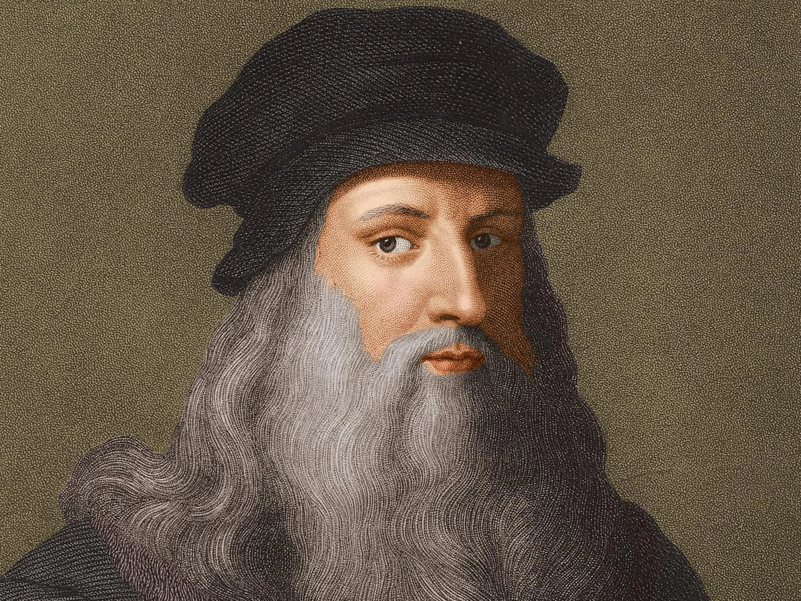

|  |
Leonardo da Vinci was a Florentine polymath of the Italian Renaissance. He was simultaneously a painter, anatomist, architect, paleontologist, botanist, writer, sculptor, philosopher, engineer, inventor, musician, poet, and urban planner. He died accompanied by Francesco Melzi, to whom he bequeathed his projects, designs, and paintings.
His most famous historical association is with painting. Two of his best-known works, the Mona Lisa and The Last Supper, have been copied and parodied many times, as has his drawing of the Vitruvian Man. However, only around 20 of his works are known, mainly due to his repeated experimentation with new techniques and his chronic inconstancy. This small number of creations, together with notebooks containing drawings, scientific diagrams, and reflections on the nature of painting, constitute a legacy for future generations of artists. |
|
William Shakespeare. Warwickshire, Kingdom of England, c. April 23, 1564jul. - Warwickshire, Kingdom of England, April 23 / May 3, 1616, was an English playwright, poet, and actor. Known at times as the Bard of Avon (or simply the Bard), he is considered the most important writer in the English language and one of the most celebrated in world literature.
According to the Encyclopaedia Britannica, Shakespeare is generally recognized as the greatest writer of all time, a unique figure in the history of literature. The fame of other poets, such as Homer and Dante Alighieri, or novelists like Leo Tolstoy or Charles Dickens, has transcended national barriers, but none of them has achieved the reputation of Shakespeare, whose works are read and performed more frequently and in more countries than ever before. The prophecy of one of his great contemporaries, Ben Jonson, has thus been fulfilled: Shakespeare belongs not to one age but to eternity. |
|
Johannes Chrysostomus Wolfgangus Theophilus Mozarta (Salzburg, January 27, 1756 - Vienna, December 5, 1791), better known as Wolfgang Amadeus Mozart, was a composer, pianist, orchestra conductor, and professor of the former Archbishopric of the Holy Roman Empire, now part of Austria, master of Classicism, considered one of the most influential and prominent musicians in history.
Mozart's oeuvre encompasses all the musical genres of his time and includes over six hundred works, mostly recognized as masterpieces of symphonic, concertante, chamber, piano, operatic, and choral music, achieving international popularity and dissemination. |
 |
Stephen William Hawking. Oxford, January 8, 1942 - Cambridge, March 14, 2018. He was a British theoretical physicist, astrophysicist, cosmologist, and science communicator. His most important works included, along with Roger Penrose, the theorems regarding spacetime singularities within the framework of general relativity and the theoretical prediction that black holes emit radiation, now known as Hawking radiation (or sometimes Bekenstein-Hawking radiation). One of the main characteristics of his personality was his contribution to scientific debate, sometimes publicly betting with other scientists. The most well-known case is his involvement in the discussion about the conservation of information in black holes. |
|
Miguel de Cervantes Saavedra (Alcalá de Henares, September 29, 1547-Madrid, April 22, 1616) was a Spanish novelist, poet, playwright, and soldier.
He is widely considered one of the greatest figures in Spanish literature. He was the author of "El ingenioso hidalgo Don Quijote de La Mancha", a novel commonly known as Don Quijote, which brought him worldwide fame and which many critics have described as the first modern novel, as well as one of the best works of world literature, the number of editions and translations of which is surpassed only by the Bible. Cervantes has been given the nickname "Prince of Wits". |
|
Albert Einstein. German Empire; March 14, 1879-Princeton, United States; April 18, 1955 was a German-born Jewish physicist, later naturalized as Swiss, Austrian and American. He is considered the most important, well-known, and popular scientist of the 20th century.
In 1905, when he was a young, unknown physicist working at the Patent Office in Bern, he published his theory of special relativity. He incorporated into it, within a simple theoretical framework based on simple physical postulates, concepts and phenomena previously studied by Henri Poincaré and Hendrik Lorentz. As a logical consequence of this theory, he deduced the most popularly known equation in physics: the equivalence of mass and energy, E=mc². That year, he also published other works that would establish some of the foundations of statistical physics and quantum mechanics. |